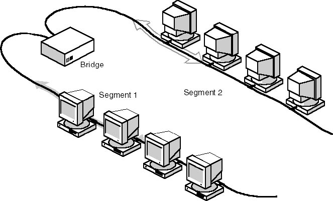

# Networking Brain Dump ### Episode 2: Towards modern Ethernet --- # Last time on NBD... - Ethernet on shared medium - MAC Addresses: unicast, multicast, broadcast - Twisted pair and hubs --- # Two worlds united - Consider an org with R&D and QA depts - Each has their own network segment - Want to work together - How do you join their networks? --- # Can they splice? - Connect coax ends together - Or connect hubs - Problems: - Cable length limits - Can be cured with repeaters - Shared medium not designed for lots of hosts --- # Better solution - Put an intelligent "bridge" device  --- # Ethernet bridge - Has 2 ports: A and B - Multicast packets are always passed between ports - Remembers source addresess and port it has seen - Only forwards unicast to other port if not local --- # Let's make it bigger - What if Accounting wants to join the party? - Same idea, need 3 ports --- # Ethernet switch - A bridge with lots of ports (e.g. 24) - Each segment is reduced to a single host - Learns MAC-port mapping - Listen / flood - No more collisions --- # Multiple bridges - Switch has limited number of ports - You can plug one switch into another - Creates different topologies - Example topology: tree --- # Watch out for loops - Switches form a loop? - Multicast packets forwarded forever! - But unicasts floods will also loop! --- # Loop elimination - Track down all loop causing links and disable them - Should produce a spanning-tree - Can't just use Kruskal's or Prim's algo --- # Spanning Tree Protocol (STP) - Step 1: Elect a root - Lowest Priority:MAC wins - Step 2: Find ports on path to root - Root ports and designated ports - Step 3: Block the rest - Remainging ports are blocked --- # Algoryhme by Radia Perlman <pre> I think that I shall never see A graph more lovely than a tree. A tree whose crucial property Is loop-free connectivity. A tree that must be sure to span So packets can reach every LAN. First, the root must be selected. By ID, it is elected. Least-cost paths from root are traced. In the tree, these paths are placed. A mesh is made by folks like me, Then bridges find a spanning tree. </pre> --- # STP limitations - Can't use redudant links for load balancing - Topology changes take 30+ secs --- # STP successors - Rapid STP - Spanning Tree Bridging (STB) - TRILL - L3 switching